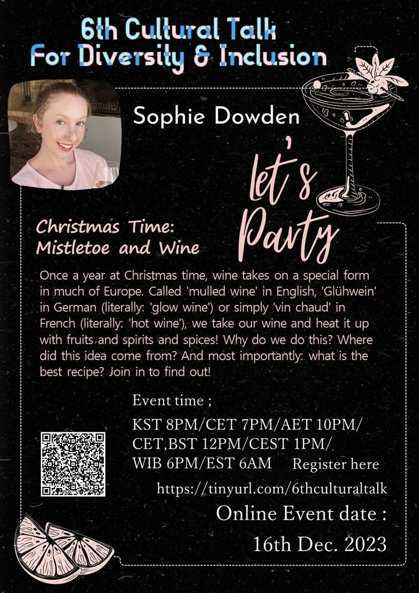
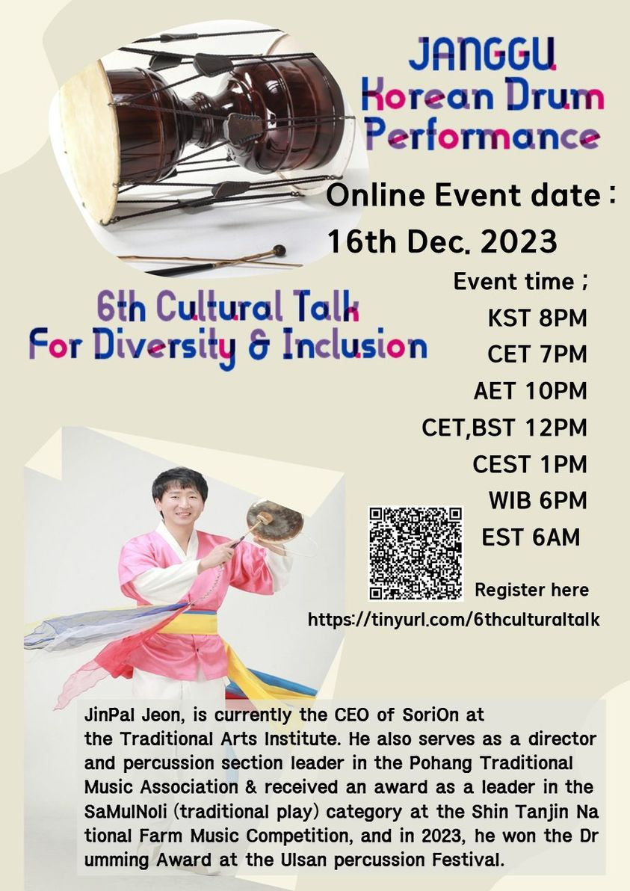

6th Cultural Talk For Diversity
Theme: Year-End Party

Event Details
Date: 16 December, 2023
Time: 20:00 (KST) / 19:00 (CET) / 22:00 (AET) / 12:00 (CET / BST) / 13:00 (CEST) / 18:00 (WIB) / 06:00 (EST)
This event has already taken place and is now part of our archive.
Conference Overview
Closing out the year, this session took the shape of a festive community gathering. It combined cultural storytelling and performance, inviting participants to experience seasonal traditions through both European Christmas customs and Korean percussion performance.

Sophie Dowden
Speaker on European culture and wine traditions
Sophie Dowden returned to Cultural Talk to share a seasonal cultural story rooted in European traditions. Her work often connects everyday cultural practice with wider historical understanding.
Topic: Christmas Time: Mistletoe and Wine
Sophie explored the tradition of mulled wine across Europe—known by names such as Glühwein and vin chaud—and explained how it became part of winter celebration. The talk blended history, custom, and festive curiosity.

JinPal Jeon
CEO of SoriOn and traditional percussion performer
JinPal Jeon is CEO of SoriOn at the Traditional Arts Institute and serves as a director and percussion section leader in the Pohang Traditional Music Association. He has received national recognition for his work in Korean traditional percussion.
Topic: Janggu Korean Drum Performance
This performance-centered segment introduced participants to Janggu and the energy of Korean traditional percussion. It offered a celebratory artistic experience as part of the year-end gathering.